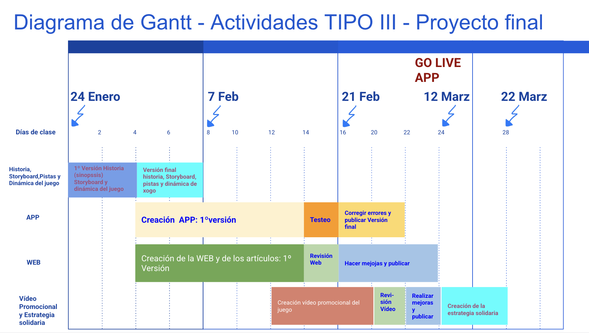
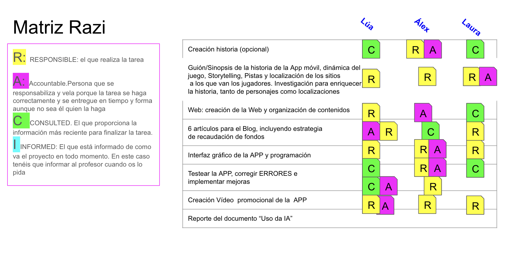

Herramientas digitales para trabajar en equipo y simulacro de reuniones eficaces.
Inicialmente el alumnado trabajaba con Jamboard para crear tableros de gestión de proyectos. Esta herramienta ha sido eliminada por lo que actualmente utilizan Google Slides, para crear cuadros de mando simplificados e incluso la herramienta online Trello, que es muy sencilla de usar y no necesita manual.
Cuadros de seguimiento
Para la gestión del proyecto, el alumnado crea tres cuadros de mando visuales, que permiten hacer un seguimiento diario del progreso y de las responsabilidades que tienen que actualizar a menudo para estar al día. La gran ventaja de usar Google Slides es que permite que todo el equipo edite los documentos al mismo tiempo, lo que asegura que cada cambio se refleje de inmediato y que todos estén siempre al tanto del progreso.
- El Diagrama de Gantt establece un cronograma detallado de las actividades clave del proyecto. Abarca desde la creación de la historia y el Storyboard hasta la fase de prueba (Testeo) y la publicación (Go live) de la aplicación. Este diagrama ayuda a visualizar la duración y las fechas límite de cada tarea, asegurando que el proyecto se mantenga en el plazo previsto.

- La Matriz RACI es una herramienta esencial para la distribución de roles y responsabilidades. En ella, cada tarea (como la creación de la historia, la web, o la programación de la APP) se asocia a un rol específico dentro del equipo de trabajo. Los roles se clasifican en: Responsable (R), la persona que ejecuta la tarea; Accountable (A), la persona responsable de que se complete correctamente; Consulted (C), la persona a la que se consulta para obtener información; e Informed (I), a quien se mantiene informado del progreso. Esta matriz asegura que todos sepan exactamente qué se espera de ellos y con quién deben comunicarse.

- Finalmente, el Scrum Board es un tablero ágil que muestra el estado actual de las tareas. Las tareas se mueven visualmente a través de las columnas, que representan las diferentes fases del flujo de trabajo: Tareas atrasadas, Tareas sin iniciar, Tareas en proceso, Testeando, y ¡Acabadas!. Este tablero facilita la identificación de cuellos de botella y permite al equipo saber en todo momento el progreso de cada tarea y dónde se necesita más apoyo, fomentando la transparencia y la colaboración. El scrum board, en muchos casos lo realizan con la APP Online Trello.
En el siguiente enlace tienes esta presentación para poder facilitarla a tu alumnado para que la modifiquen. Simplemente hay que acceder a Archivo/Crear una copia, desde tu cuenta de Google Drive: link_presentación